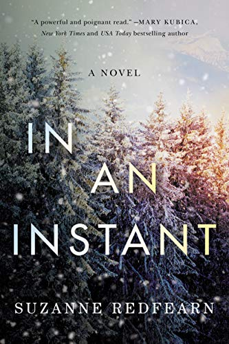

|  |
|
| A deeply moving story of carrying on even when it seems impossible.
Life is over in an instant for sixteen-year-old Finn Miller when a devastating car accident tumbles her and ten others over the side of a mountain. Suspended between worlds, she watches helplessly as those she loves struggle to survive. Impossible choices are made, decisions that leave the survivors tormented with grief and regret. Unable to let go, Finn keeps vigil as they struggle to reclaim their shattered lives. Jack, her father, who seeks vengeance against the one person he can blame other than himself; her best friend, Mo, who bravely searches for the truth as the story of their survival is rewritten; her sister Chloe, who knows Finn lingers and yearns to join her; and her mother, Ann, who saved them all but is haunted by her decisions. Finn needs to move on, but how can she with her family still in pieces? Heartrending yet ultimately redemptive, In an Instant is a story about the power of love, the meaning of family, and carrying on…even when it seems impossible. |
|